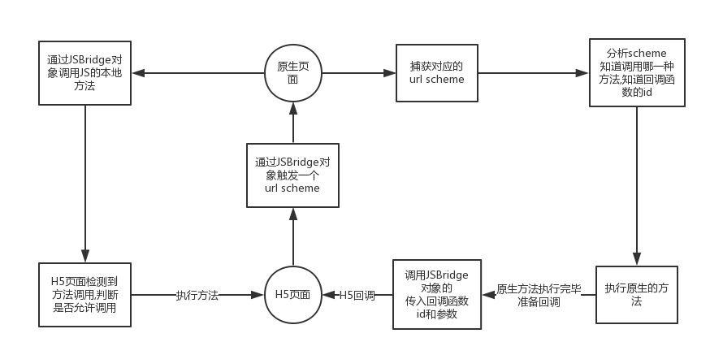
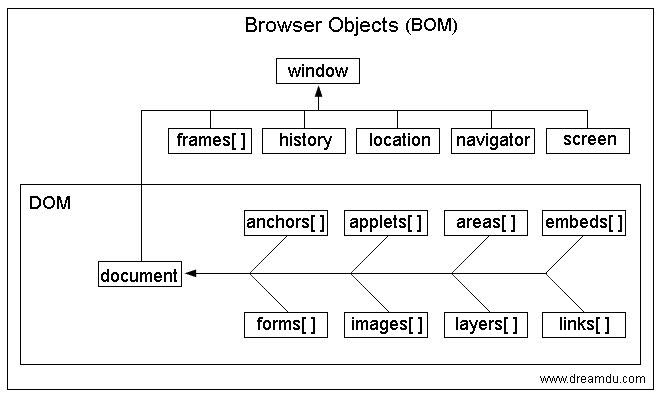

# 基础面试题
# 1、下列请求算跨域吗
1、xx.com向mp.xx.com发请求跨域吗？
2、mp.xx.com的服务器能接收到请求吗？是怎样的请求？
跨域，因为域名不同。
服务器端可以接收到请求。

跨域请求，后端拿不到 cookie，x-requested-with，新增 referer 字段。
返回的都是 200 OK。
# 2、请解释 XSS 与 CSRF 分别是什么？两者有什么联系，如何防御
# 关于 Javascript Bridge
1、解释一下什么是 Javascript Bridge。
2、Javascript Bridge 的实现原理。
3、你所了解的 Javascript Bridge 通讯中的优化方案。
JSBridge 是一座用 JavaScript 搭建起来的桥，一端是 web，一端是 native。我们搭建这座桥的目的也很简单，让 native 可以调用 web 的 js 代码，让 web 可以调用原生的代码。但它并不是直接调用，而是可以根据 web 和 native 约定好的规则来通知 native 要做什么，native 可以根据通知来执行相应的代码。

# 3、TCP/UDP 有什么区别
# TCP
优点：可靠 稳定
TCP 的可靠体现在 TCP 在传输数据之前，会有三次握手来建立连接，而且在数据传递时，有确认、窗口、重传、拥塞控制机制。在数据传完之后，还会断开来连接用来节约系统资源。
缺点：慢，效率低，占用系统资源高。
在传递数据之前要先建立连接，这会消耗时间，而且在数据传递时，确认机制、重传机制、拥塞机制等都会消耗大量时间，而且要在每台设备上维护所有的传输连接，每个连接都会占用系统的 CPU，内存等硬件资源。
# UDP
优点：快，支持一对多，多对多传输。
UDP 没有 TCP 拥有的各种机制，是一种无状态的传输协议，并且 UDP 协议也没有任何控制流量的算法，所以传输数据非常快，没有 TCP 的这些校验机制，被攻击利用的机会就少一些，但是也无法避免被攻击。
缺点：不可靠，不稳定。
因为没有 TCP 的这些校验机制，UDP 在传输数据时，如果网络质量不好，就会很容易丢包，造成数据的缺失。
UDP 相比 TCP 简单的多，不需要建立连接，不需要验证数据报文，不需要流量控制，只会把想发的数据报文一股脑的丢给对端。虽然 UDP 并没有 TCP 传输来的准确，但是也能在很多实时性要求高的地方有所作为。
# 4、如何处理高流量，高并发
1、减少请求数（合并 js，css，图片等）。
2、减少资源大小（压缩，删掉无用代码）。
3、静态资源放 CDN。
4、配置强缓存和协商缓存，减少服务器压力。
5、使用压力测试，测试单个服务器的最大 QPS，从而计算出后端多台服务器集群的抗压能力。
6、前端错误日志（监听 window.onerror 等）。
7、后端错误日志记录（process.on('uncaughtException')等）。
8、nginx 负载均衡。
9、后端守护进程（pm2），心跳检测。
10、Varnish，Stupid 后端缓存。
11、数据库读写分离。
12、加机器。
# 5、反爬虫方案
1、通过 userAgent 来控制访问（可以被伪造）。
2、通过 ip 限制来反爬虫。（如果一个固定的 ip 在短暂的时间内，快速大量的访问一个网站，那自然会引起注意，管理员可以通过一些手段把这个 ip 给封了）。
3、通过 js 脚本来防止爬虫。（如验证码，滑动解锁等）。
4、通过 robots.txt 来限制爬虫。（君子协议）。
# 6、什么是 BOM
- BOM（Browser Object Model）即浏览器对象模型。
- BOM 提供了独立于内容而与浏览器窗口进行交互的对象。
- 由于 BOM 主要用于管理窗口与窗口之间的通讯，因此其核心对象是 window。
- BOM 由一系列相关的对象构成，并且每个对象都提供了很多方法与属性。
- BOM 缺乏标准，JavaScript 语法的标准化组织是 ECMA，DOM 的标准化组织是 W3C。
常用对象：location，navigation，history，screen，frames。

# 7、HTTP 常用的请求方式
HTTP 请求方法通常有以下 8 种：OPTIONS、GET、HEAD、POST、PUT、DELETE、TRACE 和 CONNECT。
- GET 获取资源。
- POST 传输实体的主体。
- PUT 传输文件。
- HEAD 获得报文首部（类似 get，不返回报文实体）。
- DELETE 删除文件。
- OPTIONS 询问支持的方法。
- TRACE 追踪路径（让服务器将之前的请求通信返回给客户端）。
- CONNECT 要求用隧道协议连接代理（主要使用 SSL）。
# 8、OPTIONS 请求方法的主要用途
1、获取服务器支持的 HTTP 请求方法。
2、用来检查服务器的性能。例如：AJAX 进行跨域请求时的预检，需要向另外一个域名的资源发送一个 HTTP OPTIONS 请求头，用以判断实际发送的请求是否安全。
# 9、常用的跨域解决方案
- PostMessage （HTML5 协议：跨窗口通信，不论这两个窗口是否同源）
- JSONP （浏览器 hack 方式）
- WebSocket (传输层直连，没有同源策略)
- CORS （终极解决方案，服务器端允许跨域）
- 设置 document.domain 让多个二级域名跨域
# 10、HTTP 中和缓存相关的 Header 有哪些
- Expires：过期时间，一个具体的时间。
- Cache-Control：相比 Expires，有更多的控制，可以控制多久后过期。
- ETag/If-None-Match：通过资源标识符，判断资源是否改变。
- Last-Modified/If-Modified-Since：通过发送上一次请求的时间，判断在这期间内资源是否改变。
# 11、MVC 和 MVVM 的区别
我们可以这样理解：将 HTML 看成 View 层，js 看成 controller 层，将 ajax 当做 Model 层。
MVC：View -> 触发事件 -> controller 处理事件 -> 操作 Model -> 重新渲染 View。
MVVM：
View -> 触发事件 -> ViewModel 双向绑定 -> 改变 Model。
Model -> 改变数据 -> ViewModel 双向绑定 -> 改变 View。
# 12、请说出你所知道的前端缓存方案
1、h5 端可以通过 localStorage，SessionStorage，WebSQL，IndexedDB 等 API 存储数据，也可以使用封装好的 ORM 库 localForage 库，来方便操作 IndexedDB，WebSQL 等。
2、使用 Manifest 离线缓存（注意版本管理）。
3、使用 PWA，Service Worker 离线缓存（要求 HTTPS 环境， HTML5 fetch API）。
# 13、PWA 是什么
PWA 主要是为了解决传统 web 的以下几个缺点：
- 传统的 web 应用，数据在 pc 上是没有缓存的，每一次打开页面的时候都会去请求数据。
- 传统的 web 应用，没有像 app 一样的小图标放在桌面，一点开就进入了应用，而是通过打开浏览器输入网址，
- 传统的 web 应用，不能像 app 一样给用户推送消息，像微博会跟你推送说有谁评论了你的微博之类的功能。
具体操作步骤：
- 添加 manifest.json 文件。
- 添加 Service Worker。
- 使用 cacheStorage 管理缓存。
- 使用 Web Push 推送消息。
# 14、说一下 Service Worker、Memory Cache、Disk Cache 和 Push Cache 的区别
浏览器缓存可以分成 Service Worker、Memory Cache、Disk Cache 和 Push Cache，那请求的时候 from memory cache 和 from disk cache 的依据是什么？哪些数据什么时候存放在 Memory Cache 和 Disk Cache 中？
从缓存位置上来说分为四种，并且各自有优先级，当依次查找缓存且都没有命中的时候，才会去请求网络。
- Service Worker
- Memory Cache
- Disk Cache
- Push Cache
1、Service Worker
Service Worker 是运行在浏览器背后的独立线程，一般可以用来实现缓存功能。使用 Service Worker 的话，传输协议必须为 HTTPS。因为 Service Worker 中涉及到请求拦截，所以必须使用 HTTPS 协议来保障安全。Service Worker 的缓存与浏览器其他内建的缓存机制不同，它可以让我们自由控制缓存哪些文件、如何匹配缓存、如何读取缓存，并且缓存是持续性的。
- 自由控制缓存文件
- 可持续性缓存
2、Memory Cache
Memory Cache 也就是内存中的缓存，主要包含的是当前中页面中已经抓取到的资源，例如页面上已经下载的样式、脚本、图片等。读取内存中的数据肯定比磁盘快，内存缓存虽然读取高效，可是缓存持续性很短，会随着进程的释放而释放。一旦我们关闭 Tab 页面，内存中的缓存也就被释放了。
- 容量小
- 读取快
- 缓存时间短
3、Disk Cache
Disk Cache 也就是存储在硬盘中的缓存，读取速度慢点，但是什么都能存储到磁盘中，比之 Memory Cache 胜在容量和存储时效性上。 在所有浏览器缓存中，Disk Cache 覆盖面基本是最大的。它会根据 HTTP Header 中的字段判断哪些资源需要缓存，哪些资源可以不请求直接使用，哪些资源已经过期需要重新请求。并且即使在跨站点的情况下，相同地址的资源一旦被硬盘缓存下来，就不会再次去请求数据。
- 读取慢
- 容量大
- 缓存时间长
浏览器会把哪些文件丢进内存中？哪些丢进硬盘中？
- 对于大文件来说，大概率是不存储在内存中的，存在硬盘中。
- 当前系统内存使用率高的话，文件优先存储进硬盘。
4、Push Cache
Push Cache（推送缓存）是 HTTP/2 中的内容，当以上三种缓存都没有命中时，它才会被使用。它只在会话中存在，一旦会话结束就被释放，并且缓存时间也很短暂，在 Chrome 浏览器中只有 5 分钟左右，同时它也并非严格执行 HTTP 头中的缓存指令。Push Cache 在国内能够查到的资料很少，也是因为 HTTP/2 在国内不够普及。
- 只在会话中存在
- 会话结束后就被释放
- 缓存时间短
# 15、为什么 DOM 很慢
因为 DOM 是属于渲染引擎中的东西，而 JS 又是 JS 引擎中的东西。当我们通过 JS 操作 DOM 的时候，其实这个操作涉及到了两个线程之间的通信，那么势必会带来一些性能上的损耗。操作 DOM 次数一多，也就等同于一直在进行线程之间的通信，并且操作 DOM 可能还会带来重绘重排的情况，所以也就导致了性能上的问题。
# 16、如果不使用四则运算，怎么计算出两个数的和
这道题中可以按位异或，因为按位异或就是不进位加法，8 ^ 8 = 0 如果进位了，就是 16 了，所以我们只需要将两个数进行异或操作，然后进位。那么也就是说两个二进制都是 1 的位置，左边应该有一个进位 1，所以可以得出以下公式 a + b = (a ^ b) + ((a & b) << 1) ，然后通过迭代的方式模拟加法。
function sum(a, b) {
if (a == 0) return b;
if (b == 0) return a;
let newA = a ^ b;
let newB = (a & b) << 1;
return sum(newA, newB);
}
2
3
4
5
6
7
# 17、输入一个网址后发生了什么
- 输入网址并回车。
- 解析域名获得服务器 IP。
- 根据 IP 建立 TCP 管道。
- 浏览器连接 TCP 管道并发送 HTTP 请求。
- 服务器接收并处理请求。
- 服务器通过 TCP 管道传输 HTML 响应。
- 浏览器处理 HTML 响应，并渲染页面。
- 如果 HTML 内包含图片，CSS，JS 等其他资源，会继续请求其他资源。
详细内容可以参考：当你在浏览器中输入 google.com 并且按下回车之后发生了什么？
# 18、进程和线程的区别
进程是资源分配的最小单位，线程是 CPU 调度的最小单位。
- 进程只是维护应用程序所需的各种资源，而线程则是真正的执行实体。
- 进程中除了包含线程之外，还包含有独立的内存体，堆区，BSS 段，数据段，代码段等。
- 不同进程间数据资源很难共享，而多个线程可以很方便地共享进程资源。
- 进程要比线程消耗更多的计算机资源。
- 进程间不会相互影响，一个线程挂掉可能会导致进程挂掉，从而引发其他线程挂掉。
← leetcode 各种题 算法面试题 →